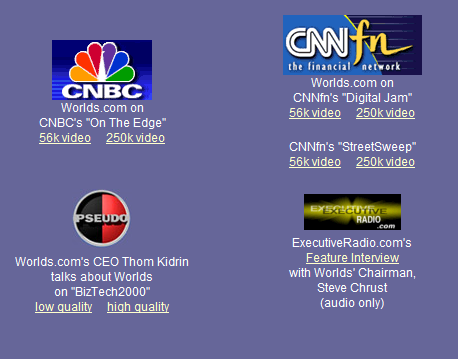

A continuación, se presentan algunos de los videos encontrados y archivados de la pagina oficial de Worlds en el 2000
En el día de la fecha, no se encuentran disponibles las entrevistas de "Pseudo" y "ExecutiveRadio.com", ya que sus paginas originales fueron eliminadas, llevandose consigo estos archivos.